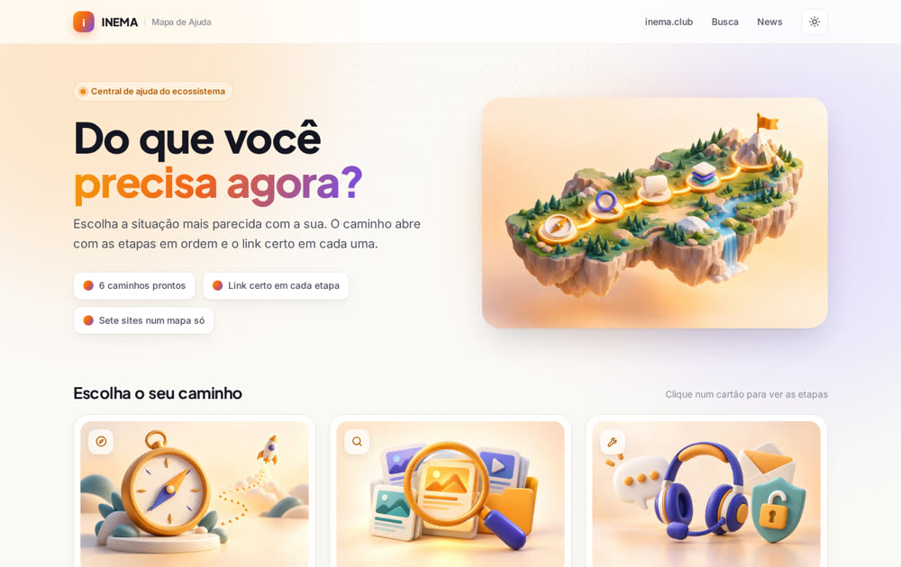
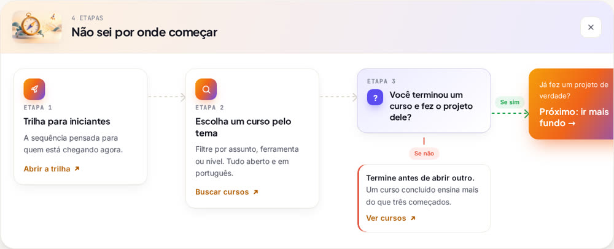
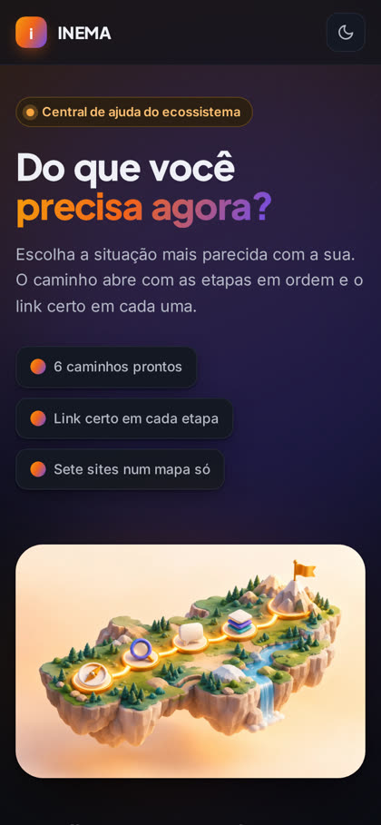

En lugar de un FAQ, la persona elige el problema que tiene ahora y recibe un camino en orden, con preguntas de sí o no y el enlace correcto en cada etapa.
mapa-ajuda es un modelo listo de centro de ayuda para sitios, cursos, comunidades y productos. En lugar de una lista de preguntas frecuentes, el visitante hace clic en el problema que tiene ahora y ve un camino en etapas, con el enlace correcto en cada una. Sirve para quien recibe siempre las mismas dudas o tiene contenido disperso en varios lugares. Es una sola página HTML: para usarla, basta editar un archivo de texto con tus caminos y publicarlo en cualquier hosting.
Tres ideas hacen que el mapa funcione mejor que un FAQ.
Las tarjetas están escritas como la persona pediría ayuda ("no encuentro un contenido"). Un clic abre las etapas en orden, en la misma página.
En el punto donde la mayoría se traba, una pregunta de sí o no devuelve a quien todavía no cumplió el requisito previo. Menos dudas repetidas en soporte.
Lo visual y la lógica quedan en index.html. Los textos, enlaces e ilustraciones quedan en config.js. Cambias el archivo, cambias el mapa.
El modelo ya viene configurado con 6 caminos que cubren inema.club, inema.pro, inema.vip, eventos, news, búsqueda y el archivo de aventura. Haz clic en una tarjeta y sigue las etapas. También hay un ejemplo genérico, de una empresa ficticia, para usar como punto de partida.

Cada camino es una secuencia de piezas. El motor arma el recorrido en horizontal en la computadora y en columna en el celular.
Una acción con un enlace. passo
Lo que lleva al siguiente: "¿No lo encontraste?", "Si sí". seta
Sí o no, con un desvío para quien no está listo. pergunta
Varias opciones del mismo nivel, numeradas. lista
Lleva a otra tarjeta y conecta los caminos. saida
Nada de instalar frameworks. Un editor de texto y un lugar donde publicar.
Cualquiera sirve (VS Code, Notepad++, el del sistema). Solo editas el config.js.
# abrir la carpeta en VS Code code mapa-ajuda
Para copiar el modelo y publicar en GitHub Pages. Sin Git, descarga el ZIP desde GitHub.
# comprobar si está instalado git --version
GitHub Pages, Vercel, Netlify o el servidor de tu sitio. También se abre directo en el navegador.
# probar en la computadora python3 -m http.server 8000
Seis pasos, de la descarga a la página en línea.
Clona el repositorio (o usa "Use this template" en GitHub, o descarga el ZIP).
git clone https://github.com/inematds/mapa-ajuda.git meu-mapa cd meu-mapa
El config.js que viene en el repo es el de INEMA. Cámbialo por el ejemplo en blanco, que ya trae comentarios con todos los campos.
cp exemplos/config.vazio.js config.js
Cada problema es una tarjeta. El fluxo es la lista de piezas, en el orden en que aparecen. El texto acepta **negrita**. Los nombres de los campos (titulo, fluxo, tipo…) quedan en portugués: son las claves de la herramienta.
{
id: 'suporte',
titulo: 'Algo salió mal',
resumo: 'Error, acceso o cobro.',
icone: 'escudo',
imagem: 'assets/suporte.webp', // opcional
fluxo: [
{ tipo: 'passo', rotulo: 'Más rápido', tempo: 'Al instante', titulo: 'Busca en la base de ayuda',
link: { texto: 'Buscar', url: 'https://exemplo.com/ajuda' } },
{ tipo: 'seta', rotulo: '¿No lo encontraste?' },
{ tipo: 'pergunta', pergunta: '¿Ya tienes cuenta?',
ramo: { rotulo: 'Si no', tipo: 'nao', titulo: 'Créala primero.', abrir: 'primeiros-passos' } },
{ tipo: 'seta', rotulo: 'Si sí', cor: 'sim' },
{ tipo: 'saida', pergunta: '¿Sigues trabado?', texto: 'Hablar con una persona', destino: 'contato' }
]
}
Guarda una imagen por tarjeta en assets/ (WebP, 3:2, hasta ~100 KB) y apúntala en el campo imagem. La portada de la página va en capa. Sin imagen, la tarjeta muestra el ícono. Usa la misma línea visual en todas: misma paleta, luz y fondo, sin texto dentro de la imagen.
# convertir una imagen a WebP liviano ffmpeg -i arte.png -vf scale=960:-1 -q:v 80 assets/suporte.webp
Abre el servidor local y haz clic en todas las tarjetas. Cada camino tiene su propia dirección: #suporte abre directo el camino de soporte.
python3 -m http.server 8000 # abre http://localhost:8000/#suporte
Sube a GitHub y activa Pages (o arrastra la carpeta a Vercel o Netlify). No hay build.
git add -A && git commit -m "meu mapa de ajuda" && git push gh api -X POST repos/<usuario>/<repo>/pages -f 'source[branch]=main' -f 'source[path]=/'
"Necesito ayuda con el acceso", no "Soporte". La persona tiene que reconocerse en la tarjeta.
Si son más, divídelo en dos caminos y conéctalos con una Salida.
En el punto donde la mayoría se traba. Quien no hizo lo anterior vuelve una casilla.
Y un verbo en el botón: "Abrir", "Buscar", "Escribir".
En soporte: primero lo que responde al instante, luego las personas, el correo al final.
Todo camino termina en otro camino o en un canal humano.
Todo esto sale del mismo config.js, sin tocar el motor.


Lo marcado como idea todavía no está hecho.
config.js por idioma y selector en la página.